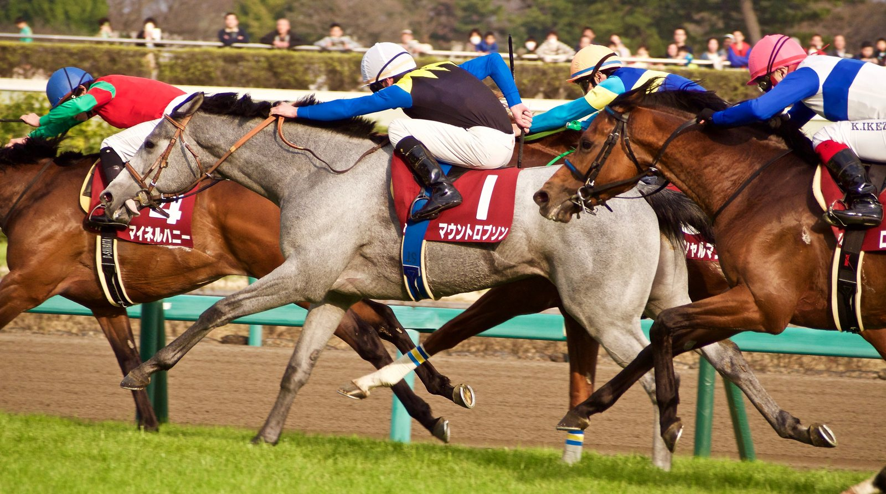

Turf Paradise afronta su temporada sin director ni veterinario y con 182.000 dólares reclamados
Los profesionales de Arizona denuncian que faltó más de medio millón de dólares de la cuenta de premios de Turf Paradise, único hipódromo de purasangres del estado, a siete semanas de abrir su temporada.

La denuncia llegó en la reunión mensual de la Arizona Racing Commission (AZRC). Leroy Gessmann, director ejecutivo de la asociación de propietarios y preparadores del estado (AZHBPA), explicó que Gary Hartunian, responsable de Skyfall 7 LLC, la sociedad que explota el hipódromo, ha devuelto 360.000 dólares. «A día de hoy todavía se nos deben 182.000. Estamos trabajando con nuestro abogado para recuperarlos», dijo. Hartunian no respondió a esa cuestión, y los comisarios tampoco pidieron más detalles.
Gessmann enumeró además los puestos vacantes: no hay director general, ni veterinario de pista, ni responsable de mantenimiento. A comienzos de semana había trascendido la marcha de Tom Ludt, el director general. Cuando Hartunian anunció que su adjunto, David Johnson, ocuparía el cargo, el presidente de la comisión, James Padish, le comunicó que Johnson también había dimitido. «Si ha dimitido, es nuevo para mí», contestó Hartunian, que prometió cubrir la plaza la semana próxima.
El empresario defendió su gestión. Asegura que invirtió millón y medio de dólares en mejoras y que todas las facturas están pagadas, salvo «un par de situaciones». Atribuyó la mala prensa a «empleados descontentos» con su política de recorte de gastos. «Es un negocio, y lo dirijo yo», zanjó.
El contraste con el verano es evidente. En la reunión del 9 de julio, Gessmann había celebrado «un cambio agradable respecto al año pasado». Skyfall 7 había arrendado a Jerry Simms el hipódromo y su red de 38 locales de apuestas antes de la temporada 2025-26, en un contrato de dos años prorrogable.
La temporada está prevista del 27 de noviembre al 1 de mayo, y la duda alcanza a los preparadores. Según Gessmann, los más grandes pueden gastar hasta 100.000 dólares en trasladarse, con el gasóleo a siete dólares. «No quieren venir y encontrarse con que no hay carreras, o que empezamos y hay que parar a mitad», advirtió.
Por Martín Larrañeta